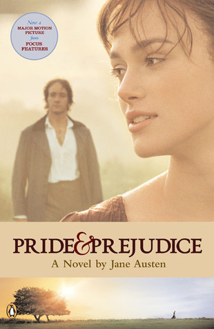

Pride and Prejudice
By: Jane Austen
style="float:"
 The Bennets have five
unmarried daughters—from oldest to youngest, Jane, Elizabeth, Mary, Kitty, and Lydia—and
Mrs. Bennet is desperate to see them all married. After Mr. Bennet pays a social visit to Mr. Bingley,
the Bennets attend a ball at which Mr. Bingley is present.